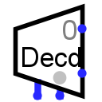

Дешифратор
Дешифратор
| Библиотека: | Коммутаторы |
| Введён в: | 2.0 Beta 11 |
| Внешний вид: |
 |
Поведение
Выдает логическую 1 строго на одном из своих выходов; выбор конкретного активного выхода определяется текущим значением на управляющем входе.
Контакты (при направлении компонента вправо, при расположении управляющего входа снизу/слева):
- Контакты на правой стороне, переменное количество (выходы, разрядность равна 1):
- Информационные выходы. Они нумеруются сверху вниз, начиная с 0. На выбранном выходе (индекс которого совпадает с текущим значением на управляющем входе) устанавливается логическая 1. На всех остальных выходах устанавливается логический 0 или высокоимпедансное состояние (Z) (в зависимости от значения атрибута Три состояния). Если управляющий вход содержит неопределённые биты, то значения на всех выходах будут неинициализированными (U).
- Нижний контакт, слева (вход, разрядность равна 1):
- Вход разрешения (EN). При логическом 0 на этом входе все выходы дешифратора переводятся в отключенное состояние (зависит от атрибута При отключенном выходе), независимо от значения на управляющем входе.
- Нижний контакт, справа, отмечен серым кружком (вход, разрядность соответствует атрибуту Разрядность адреса):
- Управляющий (выбирающий) вход. Значение на этом входе определяет, на каком из выходов на правой стороне будет установлена логическая 1.
Атрибуты
Когда компонент выбран или добавляется, цифровые клавиши от 1 до 4 меняют его атрибут Разрядность адреса, а клавиши со стрелками — его атрибут Направление.
- Направление
- Направление компонента (определяющее сторону расположения информационных выходов).
- Управляющий вход
- Расположение управляющего входа и входа разрешения относительно компонента.
- Разрядность адреса
- Разрядность управляющего (выбирающего) входа компонента. Количество информационных выходов дешифратора равно 2Разрядность_адреса.
- Три состояния
- Определяет состояние невыбранных выходов дешифратора: третье состояние (Z) (Да) или логический ноль (Нет).
- При отключенном выходе
- Определяет состояние выходов при отключении компонента (когда на входе разрешения логический 0). Доступны варианты: Z-состояние (высокоимпедансное состояние (Z) на выходе) или Ноль.
- Вход разрешения (EN)
- Определяет наличие у компонента входа разрешения. Этот параметр оставлен в основном для совместимости со схемами, созданными в старых версиях Logisim, где вход разрешения отсутствовал.
Поведение Инструмента «Нажатие»
Не предусмотрено.
Назад к Справке по библиотеке